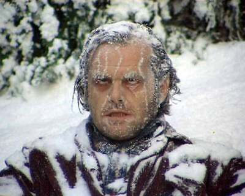

The image you see on the right is a representation of our professor every morning, right before his much-needed coffee that helps thaw him out a bit. Imagine having to wake up at 4 or 5 AM in the dead of winter just to prepare for class. Technically, since the sun hasn’t even risen yet, can we really call 4 AM "morning"? The frigid cold, combined with the mental fog of early hours, is an unfair battle both for students and faculty alike. No one should have to endure sub-zero temperatures just to attend an 8 AM lecture. Morning brain freeze inevitably leads to null pointer exceptions in our heads! For these reasons, we humbly request the administration to consider shifting CPTS 489 to a more humane afternoon time slot

| Name | City | State |
|---|---|---|
| Alice Johnson | Seattle | WA |
| Bob Smith | Portland | OR |